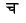
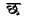

Even when #usecsx is in effect, the other ITRANS mappings are still accepted. Actually, even without the usecsx command, ITRANS will still accept all the CS/CSX character codes. The only reason the usecsx command is needed is to disambiguate the  and  characters. ITRANS by default uses cha and chha to denote and , but CS/CSX uses ca and cha. To handle this difference, the #usecsx command had to be introduced.
Though this document shows only the Devanagari script, CS/CSX can be used in ITRANS with every Indic Script that ITRANS supports. For more details on those languages, consult the documentation for that specific language. For Devanagari, consult dnvc.itx or dvng.itx, for Tamil, tamil.itx, for Bengali, beng.itx, for Telugu tlgutx.itx, for Punjabi pundoc.itx, for Romanized Sanskrit romancsx.itx.
Sometimes, it is useful to convert input text from the 8-bit CS/CSX encoding to the 7-bit ITRANS Encoding (ASCII text). Many computers still do not have good 8-bit editing tools, and even if such tools are present, the CS/CSX font may not be available, in which case editing CSX texts becomes cumbersome.
To convert input text from CS/CSX encoding to ITRANS encoding, the program csx2i has been provided. It is present in the src/ directory of the ITRANS distribution. For x86 MS-DOS compatible machines, an executable is also provided. Given a file called input.csx which contains text in CS/CSX encoding, to convert it to ITRANS encoding in a file called output, run it like this:
csx2i < input.csx > output
C-source code to csx2i is provided, in file csx2i.c, and it should compile easily on every platform.
Once the file output is checked over for manual corrections, you can embed that text in between ITRANS commands, and process it like any other ITRANS input file.
ITRANS has been developed by Avinash Chopde.
E-mail:
avinash@aczoom.com.
Home page:
http://www.aczoom.com/
2009-12-04
ITRANS Home Page: http://www.aczoom.com/itrans/